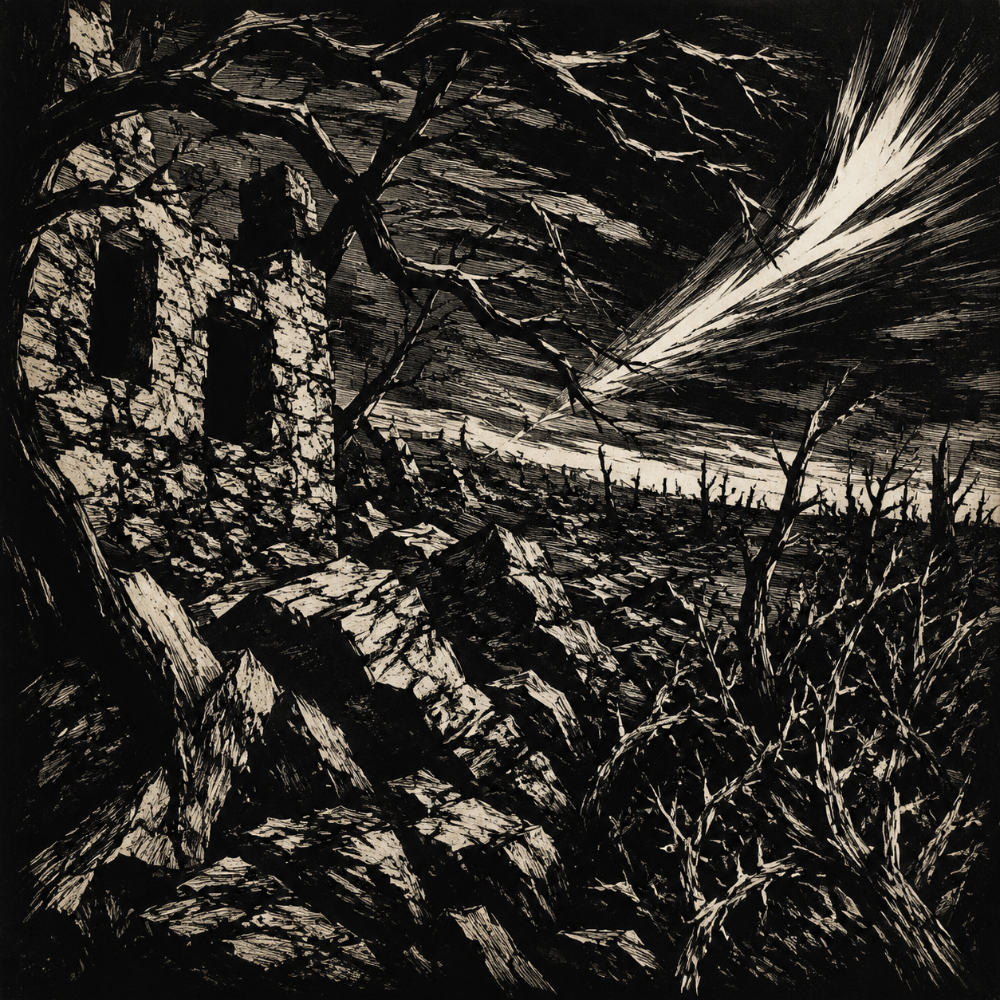

Die Steine feinden
★feinden 是诗人自造的动词（由名词 der Feind 敌人 临时动词化），标准德语中不存在——不可当作可学的词汇套用。全诗的环境被写成主动的敌意：连石头都在"敌对"。这类词类越界（名词→动词）是 Stramm 的 Wortkunst 标志。
巡逻
《Tropfblut》（1919，遗著）· Wortkunst
表现主义 / 词语艺术 · Expressionismus / Wortkunst
1915年作；遗著诗集《Tropfblut》（Der Sturm, Berlin 1919）

图片由 AI 生成
Die Steine feinden
★feinden 是诗人自造的动词（由名词 der Feind 敌人 临时动词化），标准德语中不存在——不可当作可学的词汇套用。全诗的环境被写成主动的敌意：连石头都在"敌对"。这类词类越界（名词→动词）是 Stramm 的 Wortkunst 标志。
Fenster grinst Verrat
grinsen（狞笑、咧嘴笑）+ Verrat（出卖、背叛）——窗户"狞笑着出卖"。无生命之物被赋予恶意的能动性。注意：本行无冠词、无主谓标志，是零句法的一个碎片。
Äste würgen
würgen（扼杀、掐脖子）——树枝在"扼杀"。环境对巡逻者构成全面的、身体性的威胁。
Berge Sträucher blättern raschlig
raschlig 是诗人自造的副词/形容词形（由 rascheln 沙沙响 衍生），标准德语中不通用——标"诗人自造，不可套用"。blättern（翻叶子）在此为不及物"发出叶片声"。山峦、灌木、叶片声堆在一行——名词堆叠而无连词（Asyndeton）。
Gellen
Gellen（尖鸣、刺耳的响声）作名词化，独立成行。环境的敌意收束为一个尖锐的声音。
Tod.
全诗以单词"死。"收束——唯一的一个句号落在末行。前面五行都是无标点的碎片，到"死"才闭合。语义弧线从环境的敌意收束到这个词的终点。
本诗中未标注需要特别说明的不规则动词变位。
Die Steine feinden … blättern raschlig
全诗6行，无韵、无格律、无完整句，仅末行一个句号
奥古斯特·施特拉姆（1874—1915）是德语表现主义"Wortkunst"（字词艺术）的最激进代表。他是一名邮政官员，1915年9月1日死于东线战场，生前仅在《Der Sturm》杂志发表少量作品，遗著诗集《Tropfblut》（1919）由其友人整理出版。
《巡逻》是他的代表作之一。全诗6行，写一场夜间巡逻中环境对士兵的全面敌意：石头敌对、窗户出卖、树枝扼杀、灌木沙沙、尖鸣、死。它的激进之处在于：句子整个解体，每一行只是一个名词化的意象碎片，词类被随意越界（名词当动词用），全部敌意收束到末行一个带句号的"死"字。
施特拉姆与《Der Sturm》圈子（Lasker-Schüler、Heym 同圈）共同把德语诗推向"字词艺术"的极限：意义不再由句法组织，而由单个词的冲击力承担。他与 Heym、Stadler、Trakl 同属表现主义早期夭折于一战的一代。
中文译文为本站学习译文（AI 辅助），采用直译。说明：(1) feinden 译"在敌对"、raschlig 译"沙沙作响地"，并在注释中逐个标"诗人自造，不可套用"；(2) 全诗零句法、一词一行，译文照办（每行一个意象碎片），仅在末行"死。"保留句号；(3) 本页 Wortschatz 不收 feinden / raschlig 等自造词，只收其规范基础词（der Feind、rascheln）。本诗仅6行但词形全部反常，属"短 ≠ 易"。
【三源核对】正文读法以 Zeno.org《施特拉姆著作》（Wiesbaden 1963，S.86–87）为一级来源著录（本次主机拒绝连接），读法由两个直接抓取的独立来源交叉确认：deutschelyrik.de（二级）、lyrik.antikoerperchen.de（三级）。6 行（单节）——用词一致。
【关键异文】(1) feinden（Zeno + deutschelyrik，诗人自造动词"敌对"）vs feiden（antikoerperchen.de）——后者为转录错误，本诗确定作 feinden。(2) Gellen（大写，Zeno，名词化"尖鸣"）vs gellen（小写，deutschelyrik，不定式）——本站从 Zeno 的大写名词化读法。两处差异已如实记录。
【★自造词处理原则】本诗含两个标准德语中不存在的词形：feinden（由 der Feind 造的动词）、raschlig（由 rascheln 造的副词/形容词形）。本页 Wortschatz 不收这两个自造词，只收其规范基础词（der Feind、rascheln），并在逐行注释中逐个标"诗人自造，不可套用"。这是本页与全站其他页面的根本差异，已显式说明。
【无韵、无格律的显式说明】本诗没有韵式，也没有可分析的句法结构——这是它的构成原则，不是缺失。页面已显式写出"本诗没有韵式"（同《普罗米修斯》编号34 的处理逻辑）。
【待进一步核实】(1) Zeno 主机本次拒绝连接，其 S.86–87 页码据著录，待恢复后补抓快照复核；(2)《Tropfblut》1919 的编纂与出版细节；(3) 本诗的确切写作日期（1915年，具体月份未核）。
【公版】施特拉姆1915年阵亡，公版起始年 = 1915 + 71 = 1986。
本诗现满足规则 A（≥3 来源）、B（≥3 独立运营方：zeno / deutschelyrik / antikoerperchen）、D（含一级来源：Zeno 全集本）。★本页 Wortschatz 不含任何诗中自造词形（feinden、raschlig 均未收入，只收规范基础词）。